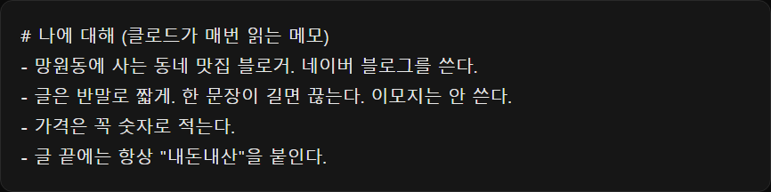
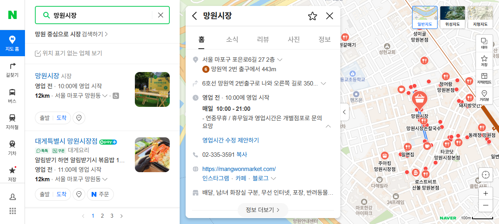

클로드가 답답했던 다섯 가지(뭘 깔지 모름·매번 처음부터 설명·촌스러운 디자인·AI 티 나는 글·웹페이지 못 엶)를 고치는 세팅 5개를 설치 순서대로 정리했어요. 카드뉴스 속 전·후 비교는 전부 저희가 빈 클로드에 직접 깔아서 돌린 결과예요.
터미널에 아래 명령을 넣으세요. 그다음부터는 클로드에게 '○○ 자주 할 건데 잘하는 스킬 있으면 찾아서 깔아 줘'라고만 하면, 스킬 목록(skills.sh)을 검색해 설치 수·만든 곳을 따지고 코드까지 읽어 본 뒤 설치해요. npx skills add https://github.com/vercel-labs/skills --skill find-skills
설치할 건 없어요. 작업 폴더에 CLAUDE.md 파일을 만들고 나에 대해 적어 두면, 새 대화를 열 때마다 클로드가 먼저 읽어요. Claude Code에서 /memory를 치면 바로 열려요. 지난 대화 내용까지 자동으로 기억하게 하려면 claude-mem(별 10만, 별도 가입·체험판 있음)도 있어요.

아래 명령으로 설치하고, 화면을 만들 때 요청 앞에 /design-taste-frontend를 붙이세요. 실제 브라우저로 결과를 찍어 보면서 스스로 고쳐서 시간이 좀 걸려요(시연은 약 15분). npx skills add https://github.com/Leonxlnx/taste-skill --skill "design-taste-frontend"
아래 명령으로 설치하고, 글을 쓸 때 요청 앞에 /humanizer를 붙이세요. 이모지 남발, 과한 꾸밈말, 뻔한 마무리 같은 'AI 글 버릇'을 걸러 내요. 영어 기준으로 만든 스킬이라 한국어에서는 꾸밈말을 줄이는 정도로 효과가 나요. npx skills add https://github.com/blader/humanizer
아래 세 줄을 차례로 넣으세요. 그러면 네이버 지도처럼 화면이 그려져야 보이는 페이지도 클로드가 직접 열고, 누르고, 스크린샷으로 확인해요. npm install -g agent-browser agent-browser install npx skills add https://github.com/vercel-labs/agent-browser

find-skills 설치 후
(자주 하는 일)을 자주 할 건데, 이런 거 잘하는 스킬 있으면 찾아서 깔아 줘. 설치 수랑 만든 곳, 코드가 안전한지도 확인하고, 뭘 깔았는지 짧게 알려 줘.
처음 한 번
앞으로 나랑 일할 때 기억해 둘 것을 CLAUDE.md에 정리해 줘: 나는 (하는 일), 말투는 (반말/존댓말), 꼭 지킬 것은 (형식·금지어).
taste-skill 설치 후
/design-taste-frontend (가게 이름) 홈페이지를 index.html 한 파일로 만들어 줘. 메뉴(…), 위치(…), 영업시간(…)이 들어가게.
humanizer 설치 후
/humanizer (주제) 블로그 후기를 5~6문장으로 써 줘. (사실 몇 가지). 글만 보여 줘.
humanizer 설치 후
/humanizer 아래 글에서 AI가 쓴 티가 나는 부분을 찾아 사람 글처럼 고쳐 줘. 고친 글만 보여 줘. (여기에 글)
agent-browser 설치 후
네이버 지도에서 '(가게·장소 이름)'을 찾아서 영업시간과 방문자 리뷰 수를 확인해 줘. 페이지에서 직접 본 값만 말하고, 확인한 화면은 스크린샷으로 남겨 줘.
도움이 되셨다면
@ai.antenna.kr
에서 바로 쓰는 AI 활용법을 계속 올립니다.